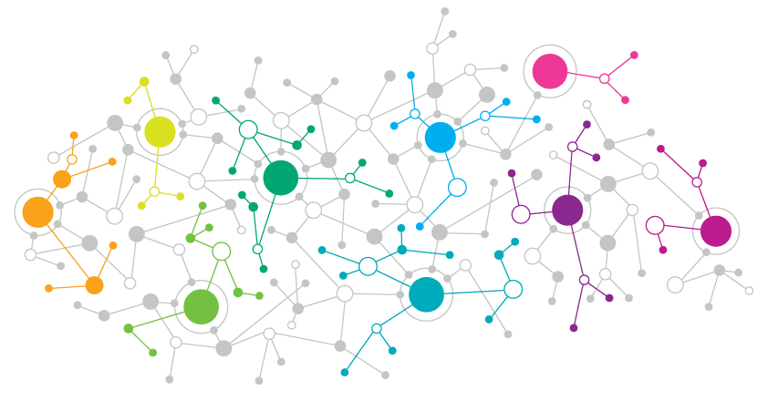
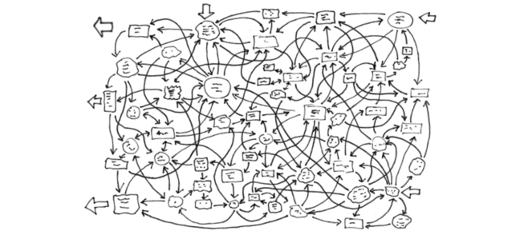

PhD Artificial Intelligence and Machine Learning. Complex systems researcher. Physicist. (she/her/hers)
Medical data integration to help with prognosis and treatment of cancer related conditions. We develop unsupervised and generative deep learning models to combine different data types (genetic, clinical records, imaging...). Our pipeline is built upon interpretable methods that allow a better understanding of the outcome. We design and use feature selection techniques, combined with Graph Neural Networks and Variational Auto-Encoders to perform both integration and a detailed analysis of patient's information. This research is funded by the Mark Foundation for Integrative Cancer Medicine.
Unsupervised generative methods to study biological processes. I have developed and extended the use of Variational AutoEncoders (VAEs) on genetic and metabolic data. Their unsupervised nature is particularly well suited for problems such as cell differentiation , where the original labels may not be well defined. The generative and variational approaches can handle data stochasticity and allow the production of synthetic samples. I have explored the robustness and generalisation power of such methods, by optimising the information and topology of the learned latent embeddings.
Combination of graphs and mathematical networks with unsupervised methods to learn the physics of interacting systems. I am particularly interested in multi-interacting systems, where its elements interact on multiple scales or physical levels. We developed fNRI, a multiplex extension of the NRI model for edge and trajectory prediction on a system of interacting particles. I strongly believe that the combination of physics and machine learning will lead to powerful and more interpretable AI results.

Graph based methods and feature extraction techniques to build interpretable AI models. I develop models that move away from the idea of machine learning as a black box, and instead incorporate elements to assist and identify key elements of the learning process. From analysing the loss landscape and information flow among layers, to an importance ranking of the input features, every task requires a different approach to explainability. I am particularly interested in the interpretability side of unsupervised learning, and its potential applications. For instance AI on patient's treatment or progonsis, where an extensive understanding of the outputs and predictions is key for backing clinical decisions.
As a physicist and mathematician, I enjoy working on projects that combine elements from both worlds. I like to find analogies and use references from well studied problems in disciplines such as quantum physics or theormodynamics, to approach some of the main AI challenges. In the past, I have used information and perturbation theory to explain the learning behaviour and improve generalisation on unsupervised models. I am always open to explore new areas and problems from different perspectives, so feel free to get in touch if you are keen to discuss about any new problems or ideas.